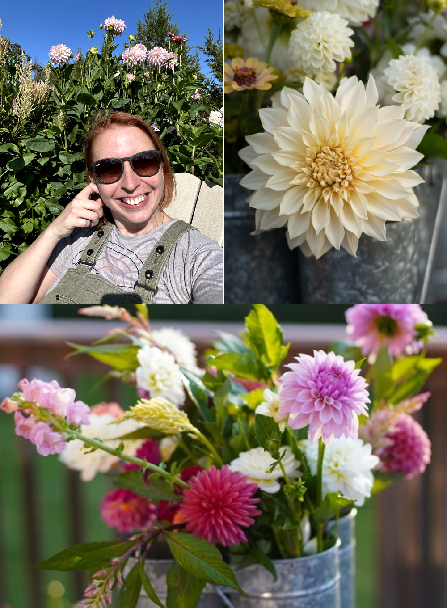
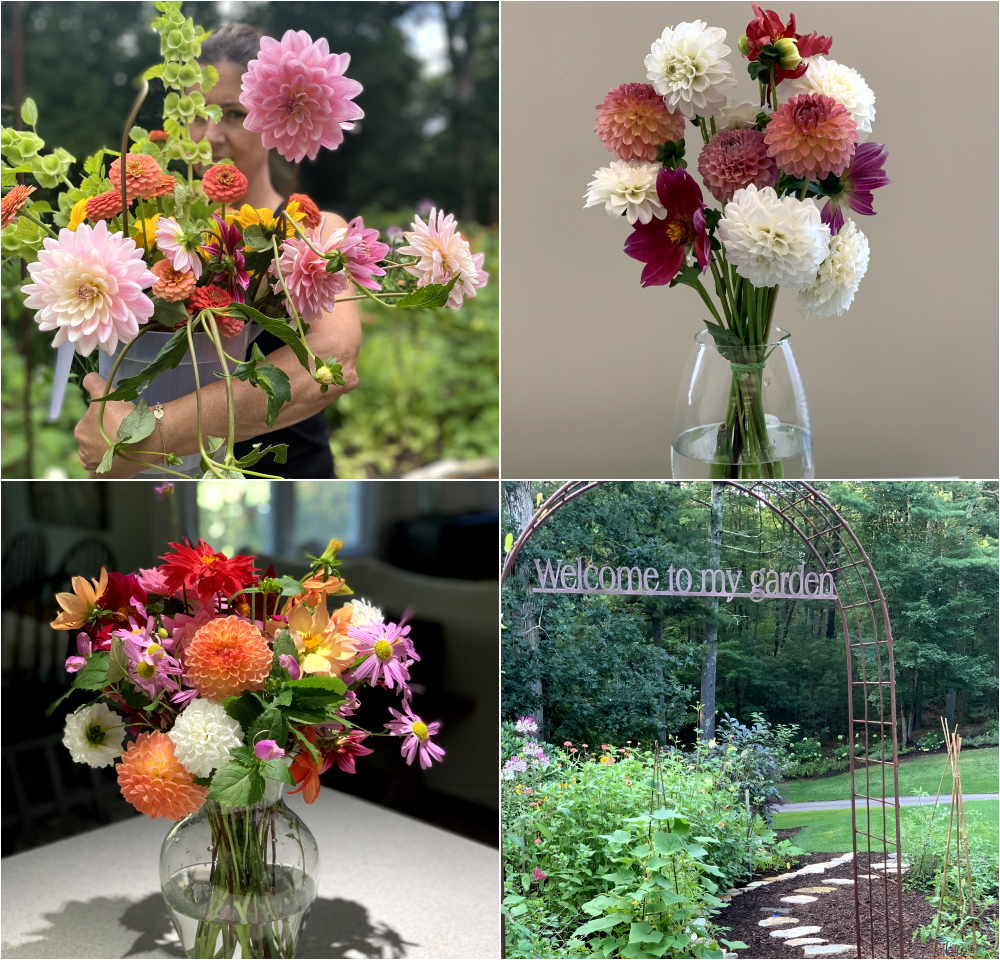
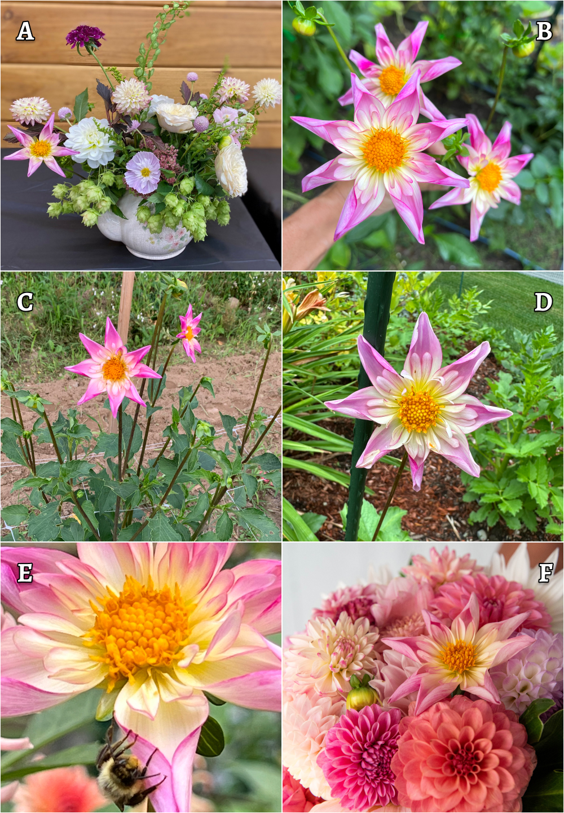
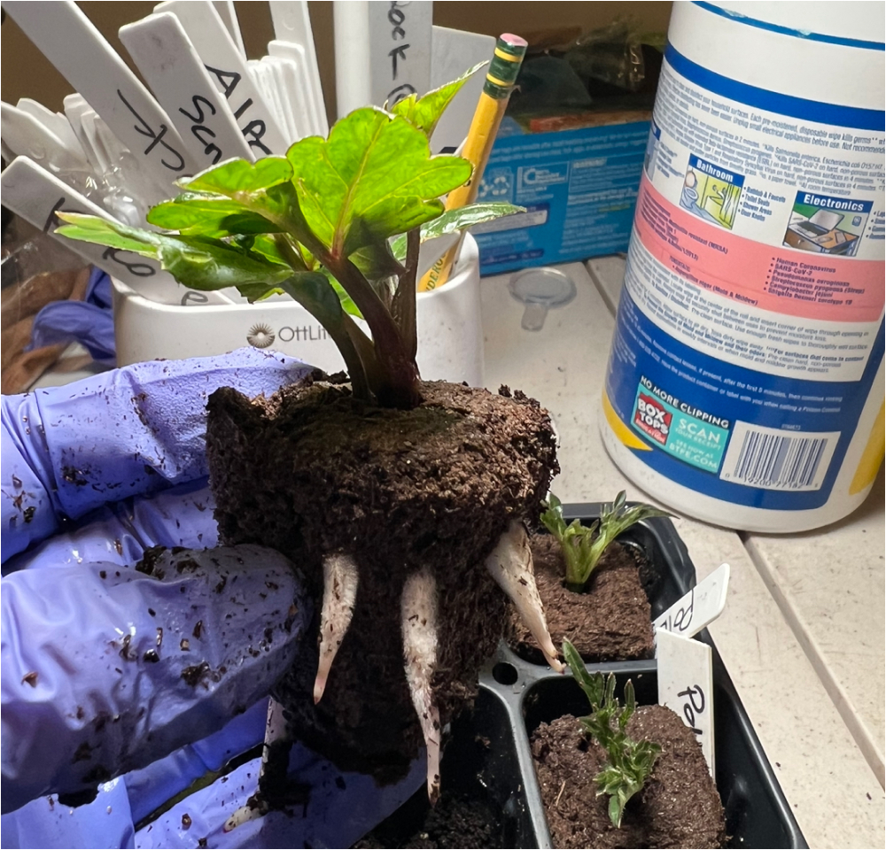
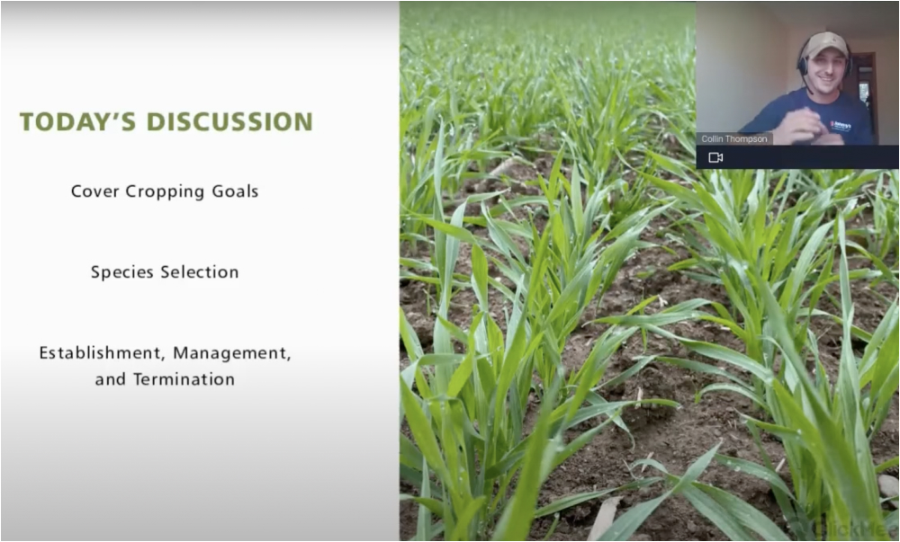

|
Hello dahlia friends!
Just a few more weeks left in 2023, how the time
flies when you're having fun!!!
We have enjoyed seeing those that have been able
to attend regular club meetings both in person
and Zoom. Getting to know and spend time with
our members is fun and truly rewarding. Since
the spring, it has been quite a busy year and we
acknowledge we have missed sending out our
monthly newsletters and been quiet on social
media. It is a big endeavor to run a club and we
are finding that it does take a community to do
it effectively. In 2023 so many of our members
got involved and we couldn’t be more THANKFUL.
We are hopeful that some of you will consider
getting involved with the club in a more formal
way to help shoulder some of the
responsibilities that are part and parcel of
running a non profit organization like YDS. We
can’t do it without you and it is so much better
to be able to do it with you!
The year started with our Annual Tuber Sale.
After hundreds of collective hours of effort we
celebrated a successful sale at our fabulous New
Year Party. Tubers were packaged and ready for
our successful public tuber sale held in April
at Massachusetts Horticultural Society, and in
May we gathered for our Big Spring Meeting and
Annual Live Auction which was a blast.
A big Thank You!! to all our YDS members who did
presentations/programs this year:
- Panat Cherdchu
- Jess Wilke of Flowers at 60 Worcester
- John Livornese
- Peter Heller - September Garden Tour
- Anne Traer of Garden and Roads
- Betsy Szymczak
- Liz Larson
-
Stefanie Schori - December Zoom presentation
We are grateful to our Growing Partners that
have supported our efforts and YDS Volunteers
that have made our dahlia gardens across the
Boston area a blooming success. From planting to
weeding and labeling it was a proud moment to
see our gardens in bloom and hear so many kind
words of how successful the YDS dahlia gardens
have been:
-
Massachusetts Horticultural Society, The
Garden at Elm Bank
-
The Trustees of Reservations Stevens-Coolidge
House & Gardens
- Nashoba Valley Winery
- Woburn Senior Center
- Wright-Locke Farm
It was amazing to have 7 members from Yankee
Dahlia Society attend the American Dahlia
Society National Show hosted by Portland Dahlia
Society in Portland, Oregon! We had an
incredible weekend packed with garden tours and
so much dahlia delight. We’d love for YOU to
join us at the 2024 National Show in Wenatchee,
WA!
As December brings in holiday cheer we are
wrapping up the season (no pun intended) and
working on finishing up dividing and labeling
the tubers for our club sale and 2024 Gardens.
Volunteer now to help get us across the finish
line! 2024 is looking bright! (again, no pun
intended) So be sure to save the date for our
New Year Celebration on Sunday, January 21st. We
have an amazing program in the works to kick off
the year! In the meantime, we wish you and yours
a lovely holiday season.
– Misty & Carol
|
|
December 19th Meeting
Benefits of Documenting Your Garden Year with
Stefanie Schori

Photos by Stefanie Schori
Gardeners know that every new growing season
brings a unique experience with a different set
of challenges and rewards to respond to. How can
we take best advantage of the learning
opportunities each new gardening year presents?
Documenting your garden season yearly is the
most effective way to increase your knowledge.
With a permanent record, the valuable
information is always at your fingertips to
reference.
YDS member Stefanie Schori has taken her tech
skill and applied it to creating a useful and
beautiful Garden Journal that she uses to
document her garden year, from preseason
planning all the way through to harvest.
Stefanie has a wonderful presence on Instagram
that is all about gardening, from vegetables to
flowers. Given Stefanie’s passion for sharing
her garden tips, creating a Garden Journal for
the home gardener to organize their information
in one place was a step that just naturally made
sense. Stefanie will present to us the many
benefits of documenting our garden year and
introduce us to her Garden Journal; highlighting
the sections and explaining why and how to use
it, and what kinds of information she found most
helpful to track year after year. Whether you
start from seeds or transplants, her Garden
Journal can help you get the most out of your
growing season. Let Stefanie inspire you to
document your garden season!
Stefanie is located in Attleboro, MA in Zone
6b. Covid turned her into a gardener and she
never looked back. Initially, Stefanie started
with vegetable gardening until she grew her
first Cafe au lait dahlia and was hooked on
cut flowers ever since. She loves to research
everything and loves even more to share her
knowledge with the gardening community.
Location:
Zoom
Zoom Link:
https://us06web.zoom.us/j/86282132073?pwd=a8bzAbjRD3F7KsSaUoZZ9Y8UiVj7ud.1
Date & Time:
Tuesday, December 19, 2023 from 6:00pm to 7:30
pm EST
(Log into Zoom meeting at 5:45 to get settled
in)
Follow Stefanie on Instagram:
@grown_in_newengland
Get Stefanie's 2024 Garden Journal:
Available now for purchase
on Etsy
in both a digital and PDF version
A paperback version will be available very soon
on Amazon for those who prefer using a paperback
journal.
|
|
Member Spotlight
Jodi Fitzsimmons

Photos by Jodi Fitzsimmons
An avid gardener for the past 25 years, dahlias
were the one flower I stayed clear of. In my
opinion they were too much trouble to dig up,
store and replant every year.
I moved to my new build home in Marshfield in
1990 complete with basic landscape shrubs and
trees. Numerous varieties of rhododendrons,
azaleas, holly, hemlock, pear, crabapple and
spruce filled the front façade. Today all of the
original plantings are gone but for a few
healthy, large rhododendrons that anchor the
front bankment. Missing from the original garden
plan were perennials. That is where my love of
gardening began. I scoured garden magazines and
would walk my neighborhood admiring various
plantings that caught my eye. Having two small
children and a full time job, my time was scarce
but I began picking up a few perennials at plant
sales, nurseries, online catalogs and of course
big box stores. With my new passion came new
friends that were happy to share cuttings and
advice. One day a neighbor that often saw me
outside planting or digging stopped by with a
box of peony tubers. She had no room for them
and I had plenty. That was 10 years ago and they
are the stars of the show in early June.
By 2019 I was quite content with my maturing
perennials, peonies, climbing roses, shrub
roses, many hydrangeas and overall garden
aesthetic. Annuals were nowhere in my garden and
I dismissed them as a waste of time and money.
Then came Floret Flowers and suddenly a cutting
garden was placed in my front yard where I could
take advantage of full day sun. I ordered dahlia
seeds, zinnias, bells of Ireland, eucalyptus,
sweet peas and created a cutting garden bed. But
it was the dahlias that intrigued me and I
purchased a few tubers that fall. Unfortunately
only a few survived the winter storage in my
garage. I now store successfully in a corner of
my unheated basement. The few that survived were
Hillcrest Suffusion, Gerrie Hoek, Blizzard and A
La Mode and I was thrilled when in August they
actually bloomed. My dahlias are planted in and
among landscape beds. I dug them up in November
and started looking for sources to buy more. My
varieties at the moment total about 18.
Shockingly few compared to most but I am aware
that collecting dahlia varieties is quite habit
forming.
My favorite dahlias (as of this early stage in
my experience) are the ball varieties.
The biggest challenge I’ve encountered is the
rabbits. I miss my next door neighbor’s cat that
hung out and kept surveillance.
This year I will try propagating by cuttings to
share with my local garden club plant sale.
Jodi gardens in Marshfield MA
Follow Jodi on Instagram:
@petalsonpinestreet
|
|
Monthly Volunteer Signup

Photos by Carol Palmer
Volunteer Activities - SignUp Genius
This month we’re continuing to divide and label
the tubers for our 2024 Members Only Tuber Sale
and we are very excited! We have lots of new
cultivars this year and can’t wait to get them
into your garden.
No experience necessary, we have jobs for every
member from novice to expert; all can
participate. Be sure to sign up so you can get
your volunteer hours in to have Early Access to
our YDS Club Tuber Sale:
Early Access to YDS Tuber Sale:
Our sale is made possible with the help of YDS
members who volunteer their time to help plant,
grow and divide tubers. YDS Members who
volunteer 6 or more hours of their time towards
cutting back, digging and dividing between
October-December 2023 will have exclusive access
for a week prior to opening the sale to all YDS
members.
2024 YDS Tuber Sale: anticipated to open early
January.
Check out the SignUp Genius for dates, times and
to join us. Even if you simply have an hour or
two. We greatly appreciate all the member
volunteer time and it’s always a lot of fun to
get together. Thank you to all who have helped
wrap up the season so far. Don’t see a day/time
on the calendar but you have time to help?
Please reach out (text or email) and let us know
your availability.
Email:
info@yankeedahiasociety.com
Misty’s Cell: (732) 674-2087
Carol’s Cell: (508) 826-9214
|
|
2023 Club Dahlia of the Year
Fancy Pants

A:
Anne Traer of Garden and Roads;
B:
Cristina Schadone;
C:
Kristin Gately of White Gate Gardens;
D:
Linda Soucy
|
|
Dahlia Tip
Newbie Notes On Dahlia Cuttings
By Cheryl Piacentini

Photo by Cheryl Piacentini
This past spring I was excited to try increasing
my dahlia stock by taking cuttings. After online
research, I chose to try rooting my cuttings in
Root Riot cubes, using rooting hormone, grow
lights and a humidity dome. I had about 50%
success and planted 5 rooted cuttings this
spring. All 5 cuttings grew a healthy plant that
produced blooms.
This fall, while washing my tuber clumps grown
from these cuttings, I was surprised to discover
residual cube material surrounding the crowns,
and interwoven between the new tubers. It was
nearly impossible to clean off the material,
thus making it difficult to see eyes. Many of
the tuber clumps seemed impacted; overall a
nightmare to divide! After some further
investigation on the Dahlia Growers Facebook
page and messaging a couple of dahlia grower
experts, I discovered my experience is not
unique. Although many growers report few
problems with the use of Root Riot cubes,
several had experienced similar difficulties as
I had.
Fellow dahlia growers offered a few helpful
suggestions going forward: utilize tweezers to
remove the jammed in material prior to dividing,
or divide the clump into thirds and plant as a
smaller clump rather then trying to divide
individually, One grower suggested that
carefully pulling away some of the cube material
from around the roots of a new cutting prior to
planting may be helpful.
Propagating additional dahlia plants is fun and
cost effective so I will try rooting cuttings
next spring, using a different medium. I’ll be
sure to keep you all posted on what I discover!
Interested in taking cuttings
Check out: YDS YouTube video
Propagating Dahlias from Cuttings
Try rooting your cuttings in ProMix like Carol &
Misty. ProMix bags and bales available on our
website for purchase. Order now for delivery at
the January 21st New Year Party or coordinate
with Misty and Carol for pickup.
|
|

Did you miss the November Zoom Meeting? We are
grateful to Collin Thompson from Johnny’s
Selected Seeds for sharing his knowledge about
Cover Crops with us. Be sure to watch the
recording. Need help accessing the shared Google
Drive? Reach out and we’ll be happy to help.
Email:
info@yankeedahliasociety.com
|
|
|
Upcoming Meetings & Events
See All Meetings
Sunday, January 21th:
January New Year Celebration Party @
Knights of Columbus
112 Middlesex Ave
Wilmington, MA 01887
|
|
|
|
|